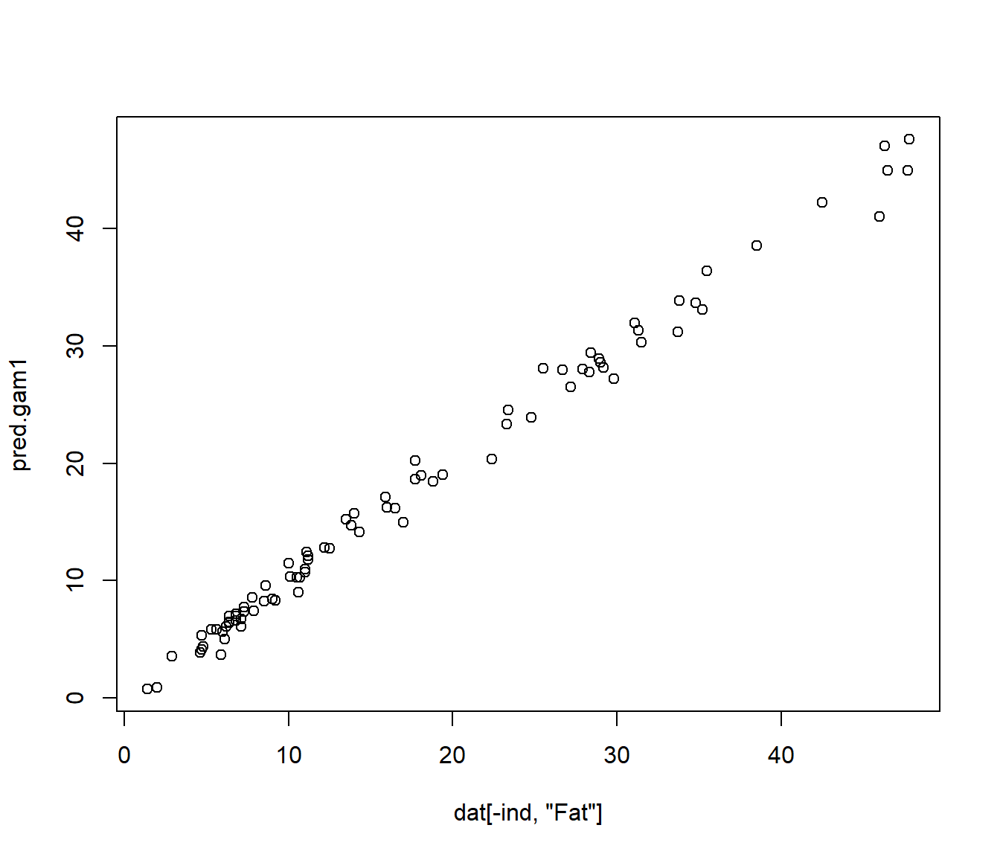

Chapter 4 Variable Selection
4.1 Functiondal regression with points of impact
4.1.1 State of Art
Nonparametric variable selection approach (NOVAS). NOVAS is quite expensive from a computational perspective, Frédéric Ferraty, Hall, and Vieu (2010).
A wavelet-based weighted LASSO functional linear (FWLASSO). FWLASSO requires transforming the original variables and assuming a linear model, Zhao, Chen, and Ogden (2015).
Berrendero, Cuevas, and Torrecilla (2016) use the Maxima-hunting proposal to choose the most relevant design points in functional classification setting.
4.1.2 Local maxima distance correlation approach (LMDC), (Ordóñez et al. 2018)
In this work we study the utility of distance correlation Székely, Rizzo, and Bakirov (2007) as an intrinsic method for variable selection.
Neither projection nor transformation of the variables is needed. Moreover, it is unnecessary to assume an a priori regression model.
LMDC approach consists in calculating the local maxima of the distance correlation along the curve.
4.1.3 LMDC Algorithm: LMDC.select() function
Calculate de distance correlation (DC) \(R(t) = \left \lbrace R(X(t_j),Y) \right\rbrace {_{j=1}^N}\), from the data \(\left \lbrace X_i (t_j),Y_i \right\rbrace _{i=1}^n\).
Calculate the LM of the \(\hat{\mathcal{R}} (t)\). Only the significant local maxima for a default level of significance are selected. Denoting the arguments values (argvals) of the local maxima a \(\tilde t_1,\tilde t_2,\ldots,\tilde t_{\tilde{N}}\) (\(\tilde{N}<N\)), we ordered them from highest to lowest values of DC, that is \(\hat{\mathcal{R}}(\tilde t_1) \geq \hat{ \mathcal{R}}(\tilde t_2) >\ldots \geq \hat {\mathcal{R}}(\tilde t_{\tilde{N}})\)
library(fda.usc)data(tecator)
X.d2<-fdata.deriv(tecator[["absorp.fdata"]],
nderiv = 2)
colnames(X.d2[["data"]])<-paste0("X",round(X.d2[["argvals"]]))
dat <- data.frame("y"=tecator[["y"]][["Fat"]],X.d2[["data"]] )
tol<-.2
dc.raw <- LMDC.select("y",data = dat, tol = tol,pvalue = 0.05,
plot=F)
# Preselected impact points
covar<-names(dat)[-1][dc.raw[["maxLocal"]]]
covar## [1] "X933" "X1046" "X907" "X886" "X896" "X1010" "X1020" "X1030" "X945"
## [10] "X876" "X915" "X862" "X993"length(covar)## [1] 134.1.4 LMDC Algorithm: LMDC.regre() function
- (Optionally) Check if the relationship between the reponse and the predictor variables is linear: \(H_0:\,Y=\big<X,\beta\big>+\epsilon\), versus a general alternative using a test of linearity proposed in Garcı́a-Portugués, González-Manteiga, and Febrero-Bande (2014).
ftest<-flm.test(dat[,-1], dat[,"y"],
verbose=F,plot.it=F)## [1] "PLS1"
## [1] "PLS2"ftest##
## PCvM test for the functional linear model using optimal PLS basis
## representation
##
## data: Y=<X,b>+e
## PCvM statistic = 216.51, p-value < 2.2e-16ftest[["p.value"]]## [1] 0Fit a regression model to the response of interest \(Y\) using the vector of covariates \(X(\tilde{t})=\{X(\tilde t_1), \ldots, X(\tilde{t}_{\tilde{N}})\}\). A linear model will be used if the null hypothesis is not rejected and a nonparametric (e.g. generalized additive model) model otherwise.
(Optionally) Once the type model has been selected, we propose to Apply a forward stepwise regression method to determine the significant covariates, taking advantage of the fact that the local maxima have been ordered. This means we start with a model with the first covariate (the one with the highest value of distance correlation), and the rest of the ordered covariates are added to the model in turn. This substantially reduces the computing time.
if (ftest$p.value > 0.05) { # Linear relationship, step-wise lm is recommended
out <- LMDC.regre(y = "y", covar = covar, data = dat, pvalue=.05, method ="lm")
} else {# Non-Linear relationship, step-wise gam is recommended
out <- LMDC.regre(y = "y", covar = covar, data = dat,pvalue=.05, method ="gam")}
out## $model
##
## Family: gaussian
## Link function: identity
##
## Formula:
## y ~ s(X933, k = 4) + s(X1046, k = 4) + s(X907, k = 4) + s(X886,
## k = 4) + s(X896, k = 4) + s(X1010, k = 4) + s(X1020, k = 4) +
## s(X1030, k = 4) + s(X945, k = 4) + s(X876, k = 4) + s(X915,
## k = 4) + s(X993, k = 4)
##
## Estimated degrees of freedom:
## 3.00 2.55 2.83 2.00 1.00 1.00 2.94
## 2.92 2.81 2.57 1.00 2.85 total = 28.48
##
## GCV score: 0.4403176
##
## $xvar
## [1] "X933" "X1046" "X907" "X886" "X896" "X1010" "X1020" "X1030" "X945"
## [10] "X876" "X915" "X993"
##
## $pred
## NULL
##
## $edf
## [1] 28.48142
##
## $nvar
## [1] 12Differences in mean square prediction error between linear (usign lm model) and non-linear (usign gam model) model
out <- LMDC.regre(y = "y", covar = covar, data = dat[1:165,],newdata=dat[166:215,], pvalue=.05, method ="lm")
mean((out$pred-dat$y[166:215])^2)## [1] 11.75474out <- LMDC.regre(y = "y", covar = covar, data = dat[1:165,],newdata=dat[166:215,], pvalue=.05, method ="gam")
mean((out$pred-dat$y[166:215])^2)## [1] 1.148573Binary classification example (Impact point selection, model estimation and prediction)
data(tecator)
X.d2<-fdata.deriv(tecator[["absorp.fdata"]],
nderiv = 2)
colnames(X.d2[["data"]])<-paste0("X",round(X.d2[["argvals"]]))
y2groups <- ifelse(tecator[["y"]][["Fat"]]<12,0,1)
dat <- data.frame("y2groups"=y2groups,X.d2[["data"]] )
tol<-.1
dc.raw <- LMDC.select("y2groups",data = dat, tol = tol,pvalue = 0.05,
plot=F)
# Preselected impact points
covar<-names(dat)[-1][dc.raw[["maxLocal"]]]
covar## [1] "X945" "X905" "X933" "X886" "X1020" "X876" "X1030" "X896" "X1046"
## [10] "X862" "X1010" "X915" "X965"length(covar)## [1] 13# GLM model (using binomial family), other multivariate model can be used
ind <- 1:129
ldata<-list("df"=dat[ind,])
form.glm<-formula(paste0("y2groups~",paste0(covar,collapse="+")))
out.glm <- classif.glm(form.glm, data = ldata)
summary(out.glm)## - SUMMARY -
##
## -Probability of correct classification by group (prob.classification):
## 0 1
## 1 1
##
## -Confusion matrix between the theoretical groups (by rows)
## and estimated groups (by column)
##
## 0 1
## 0 58 0
## 1 0 71
##
## -Probability of correct classification: 1# Prediction
newldata<-list("df"=dat[-ind,])
pred.glm<-predict(out.glm,newldata)
# Confusion matrix
table(newldata$df$y2groups,pred.glm)## pred.glm
## 0 1
## 0 40 0
## 1 3 434.2 Variable selection in functional regression
Febrero-Bande, González-Manteiga, and Oviedo de la Fuente (2019) consider the problem of variable selection in regression models in the case of functional variables that may be mixed with other type of variables (scalar, multivariate, directional, etc.).
Our proposal begins with a simple null model and sequentially selects a new variable to be incorporated into the model based on the use of distance correlation proposed by (Székely, Rizzo, and Bakirov 2007). For the sake of simplicity, this paper only uses additive models.
\[ Y_i=\alpha+\sum_{j=1}^Jf_j({X_i^{(j)}})+\varepsilon_i,\quad i=1,\ldots,N \]
The proposed algorithm may assess the type of contribution (linear, non linear, …) of each variable. The algorithm has shown quite promising results when applied to simulations and real data sets.
4.2.1 State of Art
Stepwise regression, Akaike (1973). The main idea is to use some diagnostic tools, directly derived from the linear model, to evaluate the contribution of a new covariate and decide whether it should be included in the model. The final subset is usually constructed using: the forward and/or the backward selection.
Feature Selection using LASSO. The work by Tibshirani, 1996 proposing the LASSO estimator includes a \(l_1\)-type constraint for the coefficient vector \(\beta\). Several examples following the same line but using penalties or constraints such as: LARS (Efron et al. et al. (2004)) and COSSO (Lin, Zhang et al. (2006)). Each methods is based on a specific model, all the covariates must be included in the model at the same time and for functional data problems, the previous steps that commonly include variable standardization.
Berrendero, Cuevas, and Torrecilla (2016) use the Minimum Redundance Maximum Relevance (mRMR) procedure to choose the most relevant design points in functional classification setting.
A pure feature selection methods where the covariate is selected without a model. This is the approach employed in minimum Redundancy Maximum Relevance (mRMR), (Peng, Long, and Ding (2005)) where a new candidate covariate must have a great relevancy with the response while maintaining a lower redundancy with the covariates already selected in the model. he main advantage of this approach is that it is an incremental rule but the measures for redundancy and relevancy must be chosen in function of the regression model applied to ensure good predictive results in the final model. Berrendero, Cuevas, and Torrecilla (2018) used the Reproducing Kernel Hilbert Space (RKHS) for variable selection in FLM.
Boosting, see F. Ferraty and Vieu (2009) in a functional data context. Boosting selects at each step the best covariate/model with respect to the unexplained part of the response. The final prediction is constructed as a combination of the different steps.
Partial distance correlation (PDC): used in Yenigün and Rizzo (2015) for VS in multivariate linear models, a definition of PDC among \(X\) and \(Y\) given \(Z\) was introduced based on computing the distance correlation among the residuals of two models: \(Y\) respect to \(Z\) and \(X\) respect to \(Z\). PDC is constructed under linear relationship assumptions among variables. Its implementation only uses the distance matrices among elements of \(X\), \(Y\) and \(Z\) (variables should have a similar scale).
Specifically, \(Z\) (the variables already in the model) could be a mix of functional, scalar or multivariate variables where an appropriate distance using all of them must be hard to compute. Even restricting ourselves to the scalar case, those variables should have a similar scale.
4.2.2 Algorithm
All the previous solutions are not completely satisfactory in a functional data framework, specially when the number of possible covariates can be arbitrarily large. We are interested in an automatic regression procedure capable of dealing with a large number of covariates of different nature, possibly very closely related to one another.
The key of the whole procedure is the extensive use of the DC that presents two important advantages: the choice of the variate is made without considering a model and it is possible to compute this quantity for variates of different nature as it is only computed from distances. The distance correlation (DC) is computed among the residuals of the current model with each candidate. Taking into account that the residuals have the same nature as the response variable, the DC can always be computed at each step.
Our proposal is presented is a very general way, we have restricted ourselves to additive models that offer a balanced compromise between predictive ability and simplicity. The obtained results are quite promising in scenarios where no competitors are available because no other procedure can deal with variates of different nature in a homogeneous way.
The procedure was applied to a real problem related with the Iberian Energy Market (Price and Demand) where the number of possible covariates is really big. The algorithm was able to find synthetic regression models offering interesting insights about the relationship among the response and the covariates. The final selected models mix functional, scalar and categorical information.
Our algorithm can be formalized as follows:
Let \(Y\) the response and \(S=\{X^1,\ldots,X^p\}\) the set of all possible predictors.
Set \(\hat{Y}=\bar{Y}\), and let \(M^{(0)}=\emptyset\) the initial set of the variates included in the model. Set \(i=0\).
Compute the residuals of the current model: \(\hat{\varepsilon}=Y-\hat{Y}\).
Choose \(X^j\in S\) such that: 1) \(\mathcal{R}\{\hat{\varepsilon},X^j\}\ge \mathcal{R}\{\hat{\varepsilon},X^k\}, \forall k\ne j\in S\) and 2) the null hypothesis for the test of independence among \(\left\{X^j\right\}\) and \(\hat{\varepsilon}\) is rejected. IF NOT, END.
Update the sets \(M\) and \(S\): \(M^{(i+1)}=M^{(i)}\cup\{X^j\}\), and \(S=S\backslash\{X^j\}\).
Compute the new model for \(Y\) using \(M^{(i+1)}\) choosing the best contribution of the new covariate. Typically, there will be a catalog of all possible ways of constructing correct models with the variates in \(M^{(i+1)}\) fixing the contributions of the variates in \(M^{(i)}\) and adding the new one.
Analyze the contribution of \(X^j\) in the new model respect to the current:
IF this contribution is not relevant (typically comparing with the current model) THEN \(M^{(i+1)}=M^{(i+1)}\backslash\{X^j\}\) and the current model remains unalterable
ELSE the new model becomes the current model and provides new predictions (\(\hat{Y}\)). Along the paper we have employed an additive model: \(\hat{Y}=\bar{Y}+\sum_{m\in M}\hat{f}_m\left(X^{(m)}\right)\) where at each step \(\hat{f}_m\) could be linear or nonlinear.
Update the number of iterations: \(i=i+1\) and go to 3
END.
The current model is the final model with the variates included in \(M^{(i)}\). \(S\) is either the empty set or contains those variables that accept the null hypothesis of the test of independence respect to the residuals of the current model.
4.2.3 R example
data(tecator)
y=tecator$y$Fat
# Potential functional covariates
x=tecator$absorp.fdata
x1<-fdata.deriv(x)
x2<-fdata.deriv(x,nderiv=2)
# Potential factor covariates
xcat0<-cut(rnorm(length(y)),4)
xcat1<-cut(tecator$y$Protein,4)
xcat2<-cut(tecator$y$Water,4)
ind <- 1:129
# 3 functionals (x,x1,x2), 3 factors (xcat0, xcat1, xcat2)
# and 100 potential scalars covariates (impact poitns of x1)
dat <- data.frame("Fat"=y, x1$data, xcat1, xcat2)
ldat <- list("df"=dat[ind,],"x"=x[ind,],"x1"=x1[ind,],"x2"=x2[ind,])
# Time consuming
res.gam1<-fregre.gsam.vs(data=ldat,y="Fat")
summary(res.gam1$model)## Fat X97 x2.PC1 x2.PC2
## Min. : 0.90 Min. :-0.015836 Min. :-0.003367 Min. :-3.082e-03
## 1st Qu.: 7.70 1st Qu.:-0.010165 1st Qu.:-0.002367 1st Qu.:-7.165e-04
## Median :14.60 Median :-0.009397 Median :-0.000950 Median :-2.801e-05
## Mean :18.24 Mean :-0.009414 Mean : 0.000000 Mean : 0.000e+00
## 3rd Qu.:27.80 3rd Qu.:-0.008574 3rd Qu.: 0.001717 3rd Qu.: 6.665e-04
## Max. :49.10 Max. :-0.006377 Max. : 0.009573 Max. : 6.246e-03
## x2.PC3 x2.PC4
## Min. :-0.0032986 Min. :-1.041e-03
## 1st Qu.:-0.0001912 1st Qu.:-1.193e-04
## Median : 0.0001008 Median : 2.363e-05
## Mean : 0.0000000 Mean : 0.000e+00
## 3rd Qu.: 0.0002728 3rd Qu.: 1.270e-04
## Max. : 0.0034901 Max. : 1.131e-03# Prediction like fregre.gsam()
newldat <- list("df"=dat[-ind,],"x"=x[-ind,],"x1"=x1[-ind,],"x2"=x2[-ind,])
pred.gam1<-predict(res.gam1,newldat)
plot(dat[-ind,"Fat"],pred.gam1)